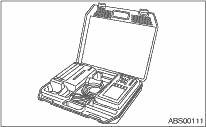
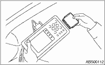
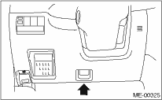

1. READ DIAGNOSTIC TROUBLE CODE (DTC)
When malfunction of airbag system occurs, the DTC stored in airbag control module will be read out.
1. Prepare the Subaru Select Monitor kit. 

2. Connect the diagnosis cable to the Subaru Select Monitor.
3. Insert the cartridge to Subaru Select Monitor.

4. Connect the Subaru Select Monitor to the data link connector.
(1) The data link connector is located in the lower portion of the instrument panel (on the driver’s side).

(2) Connect the diagnosis cable to the data link connector.
CAUTION:
Do not connect scan tools other than the Subaru Select Monitor.
5. Turn the ignition switch to ON (engine OFF) and turn the Subaru Select Monitor switch to ON.

|
(1) |
Power switch |
6. On the «Main Menu» display screen, select {Each System Check} and press the [YES] key.
7. On the «System Selection Menu» display screen, select the {Airbag System} and press the [YES] key.
8. {Press the [YES] key after the {**MY AIRBAG SYSTEM} is displayed.
9. On the «Airbag System» screen, select the {DTC Display}, and then press the [YES] key.
NOTE:
• For details concerning operation procedures, refer to the “SUBARU SELECT MONITOR OPERATION MANUAL”.
Clear the DTC stored in the airbag control module after repairing the airbag system. (After the breakdown is recovered, the breakdown code for completed recoveries are read out when the next breakdown occurs if the memory clear work is not performed.)
1. On the «Main Menu» display screen, select {Each System Check} and press the [YES] key.
2. On the «System Selection Menu» display screen, select the {Airbag System} and press the [YES] key.
3. On the {Airbag System} menu screen, select the {Clear Memory} and press the [YES] key.
4. When the “Clear Memory?” is shown on the screen, press the [YES] key.
5. When “Done” is displayed, turn the Subaru Select Monitor to OFF.
NOTE:
For details concerning operation procedures, refer to the “SUBARU SELECT MONITOR OPERATION MANUAL”.